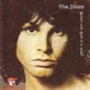

WANTED (CD)
Sugarcane Records SC 52016, Italy 1993 |
| 1. Roadhouse Blues/ 2. Back Door Man-Five
To One/ 3.When The Music's Over/ 4. Who Do You
Love/ 5. Light My Fire-Fever-Summertime-St.James
Infirma- ry-Light My Fire/ 6.The End |
| Sources: Pacific National Exhibition
Coliseum, Vancouver, Canada, June 6th, 1970;
original source is a Westwood One radio show. A
copy of Feel The Blues (American Concert Series
ACS 024). Same as Lion Tavern (Transatlan- tic
Records IBR 2245). |
| Soundquality: |
 |
| Rarity Of Material: |
|
| Visual Attractiveness: |
|
Same shit as the other sources mentioned above. Same
fade-ins, same fade-outs. A copy of a copy of a copy.
Urgh! The cover is even worse. Don't mix this CD up with
the Seattle bootleg CD bearing the same title (Ghe-San
Disc BM 050). But anyway, it seems all boots called
Wanted should be best avoided.
WANTED (CD)
Beech Marten, BM 050, Italy 1992 |
| 1.Intro/ 2.Roadhouse Blues/ 3.Someday
Soon/ 4.Mystery Train (incomplete)/ 5.Break On
Through/ 6.Five To One-Back Door Man/ 7.The End/
8.When The Music's Over |
| Sources: 1-6=Center Coliseum, Seattle,
June 5th, 1970; tracks 7+8=Pacific National
Exhibition Coliseum, Vancouver, Canada, June 6th,
1970. All songs were taken from a Westwood One
radio special. Not the complete show. A copy of
June 5th 1970 - Live in Seattle (Flashback
Worldproductions 02.92.0170) |
| Soundquality: |
|
| Rarity Of Material: |
|
| Visual Attractiveness: |
|
Well, this has got the same tracks and almost the same
soundquality, but (compared to the one above) it is much
worse. The bootleggers didn't care that much about how to
edit the tracks. They fade in, they fade out, first notes
and last notes of the songs are cut off. But if you can
get Jim's Alive - The Ultimate Seattle Tapes (Tuff
Bites T.B.941009), forget this one. I also dislike the
cover which reproduces the tasteless Rolling Stone
"Wanted"-poster, but with a colour photo.
WEIRD SCENES INSIDE THE
HOLLYWOOD BOWL (CD)
Living Legend Records LLRCD 109 |
| 1.When The Music's Over/ 2.Alabama
Song-Back Door Man-Five To One/ 3.Moonlight
Drive-Horse Latitudes/ 4.The End/ 5.Little Red
Rooster (not complete)/ 6.Who Do You Love (not
complete) |
| Sources: 1-4 = Hollywood Bowl, Los
Angeles, June 5th, 1968, taken from the official
video Live At The Hollywood Bowl; 5+6 = Pacific
National Exhibition Coliseum, Vancouver, Canada,
June 6th, 1970. |
| Soundquality: |
to |
|
|
|
|
|
| Rarity Of Material: |
|
|
|
|
|
| Visual Attractiveness |
|
|
|
|
|
Another rip-off. Yes, you have to be really careful about
most of the releases from the underground. This one
contains most of the tracks from the official Live At
The Hollywood Bowl video (I still wonder why The
Doors put out just a part of that concert on CD and
almost the complete concert on videotape: what a feast
for CD bootleggers!) along with two abbreviated songs
from their Vancouver concert with Albert King (both taken
from the radio-show The Doors From The Inside). Who
Do You Love is just 24 seconds long (!),
unbelievable! I hope nobody bought this rubbish!
WELCOME TO THE SOFT PARADE
(CD)
World Productions Of Compact Music WPOCM 0589 D
021-2, Italy 1989 |
| 1.Tell All The People/ 2.Alabama Song-Back
Door Man/ 3.Wishful Sinful/ 4.Build Me A Woman/
5.The Soft Parade/ 6.Interview 7.Hello I Love
You/ 8.Summer's Almost Gone/ 9.End Of The Night
10.Moonlight Drive/ 11.My Eyes Have Seen You/
12.Insane (cover says Not To Touch The Earth) |
| Sources: 1-6=Critique PBS TV, WNET,
New York, May 13th, 1969 (cover says May 23rd
which was the day of the broadcast, not the
recording); 7-12=Demo Acetate, World Pacific
Studios, Los Angeles, September 2nd, 1965. |
| Soundquality: |
|
| Rarity Of Material: |
|
| Visual Attractiveness: |
|
World Productions Of Compact Music are known for
rather good covers but bad soundquality. Same goes for
this CD. At the time of ist release, there were quite
many vinyl bootlegs out which were in much better
quality. For example - the Critique show was
better on the first US LP bootleg pressing with the same
title, and the interview with all four Doors was
presented the best on the first US pressing of the LP Mr
Mojo Risin'. For this CD they used scratched copies
of Italian reprints of the vinyls mentioned before. Pity!
The demos are interesting, but the soundquality is much
better on the very sought-after Run Free bootleg
from Italy. The cover shows an interesting live shot of
an early Doors performance at the Fillmore Auditorium in
New York with a psychedelic projection behind the group,
but the picture was copied from the German Celebration
double bootleg album. So everything on this bootleg got
copied from vinyl releases! None of the tracks is in
stereo (as indicated on the cover), and sources and dates
are mislabeled; most likely not intentionally, the
bootleggers simply did not know it better.
WESTBURY MUSIC FAIR (CD)
Octopus/Why Not? Octo 003, Italy 1994 |
| 1.Roadhouse Blues/ 2.Peace Frog/ 3.Alabama
Song-Back Door Man-Five To One/ 4.The Celebration
Of The Lizard/ 5.Soul Kitchen/ 6.Light My Fire/
7.Build Me A Woman/ 8.When The Music's Over. |
| Sources: 1-6=Felt Forum, New York,
January 18th, 1970, late show. Track 7 from
January 17th, 1970 at the Felt Forum, late show;
8=Felt Forum, New York, January 18th, early show. |
| Soundquality: |
|
| Rarity Of Material: |
|
| Visual Attractiveness: |
|
Of course this is NOT their performance at Westbury
Music Fair in early 1968, as the people Octopus/Why
Not want to tell you. Simply have a look at the track
list: Roadhouse Blues and Peace Frog
performed in 1968??? I simply hate mislabelled CDs. So -
if you have the glorious New York Blues (Document
Records DR 033) and Orange County Suite (Document
Records DR 019), you have got the tracks already - in
even better soundquality. Do not let the bootleggers fool
you and simply ignore this rip off!
WHEN THE MUSIC'S OVER (CD)
On Stage, Sarabandas srl, CD 12029, Italy 1992 |
| 1.Build Me A Woman/ 2.Universal Mind/
3.Who Do You Love/ 4.Dead Cats, Dead Rats-Break
On Through #2/ 5.Close To You/ 6.Alabama
Song-Back Door Man-Love Hides-Five To One/ 7.When
The Music's Over |
| Sources: Official Elektra album In
Concert. |
| Soundquality: |
|
| Rarity Of Material: |
|
| Visual Attractiveness: |
|
It's getting boring to see all those illegal releases
of official albums, to tell you the truth. This is
another boring example of how to rip off people. This
company called Sarabandas usually takes tracks from live
radio shows, but this time they took all tracks from The
Doors' official album In Concert (as they did for
their release Light My Fire, Sarabandas 12015). Of
course the quality of this CD is excellent, the graphic
artwork of the cover is enjoyable, but in general this is
just another way to grasp money from fans and collectors.
Why don't you steal this CD instead of buying it? Those
bootleggers stole the music from an official release,
right?
WHEN THE MUSIC'S OVER (CD)
Great Dane Records GDR CD 9114, Italy 1991 |
| 1.Touch Me/ 2.Back Door Man/ 3.Light My
Fire/ 4.When The Music's Over/ 5.The End/
6.Money/ 7.Break On Through/ 8.I'm A King Bee/
9.Rock Me Baby |
| Sources: 1=Smothers Brothers Comedy
Hour, Los Angeles, December 4th, 1968;
2,3,6-9=Matrix Club, San Francisco, March 7th and
10th, 1967; 4+5=Holly- wood Bowl, Los Angeles,
June 5th, 1968, from the official video Live At
The Hollywood Bowl. |
| Soundquality: |
to |
|
|
|
|
 |
| Rarity Of Material: |
|
|
|
|
|
| Visual Attractiveness: |
|
|
|
|
|
Another compilation CD from Italy. Although the sound is
okay and although the CD comes with a nice and
informative booklet, this compilation is not worth the
money.
WHO DO YOU LOVE (CD)
Oil Well RSC CD 098, Italy 1995 |
| 1. Roadhouse Blues/ 2. Back Door Man-Five
To One/ 3.When The Music's Over/ 4. Who Do You
Love/ 5. Light My Fire-Fever-Summertime-St.James
Infirma- ry-Light My Fire/ 6.The End |
| Sources: Pacific National Exhibition
Coliseum, Vancouver, Canada, June 6th, 1970;
original source is a Westwood One radio show.
This CD was copied from Lion Tavern
(International Broadcasting Recording IBR 2245)
which was a copy of Feel The Blues (American
Concert Series ACS 024). |
| Soundquality: |
|
| Rarity Of Material: |
|
| Visual Attractiveness: |
|
Fade in, fade out. The same as the copies mentioned
above. Pity! If you want to have the best quality of the
same material, get Live In Vancouver (Sounds Alive
SA 24.020). Fade out. Thanks God this is limited to 200
copies only.
WITH EDDIE VEDDER (CD)
The Swingin' Pig TSP-CDS-005, Luxembourg 1994 |
| 1.Roadhouse Blues/ 2.Break On Through/
3.Light My Fire. |
| Sources: Rock'n'Roll Hall Of Fame
Induction performance, Century Plaza Hotel, Los
Angeles, January 12th, 1993. |
| Soundquality: |
|
|
|
|
|
|
| Rarity Of Material: |
|
|
|
|
|
| Visual Attractiveness: |
|
|
|
|
|
If you are into Maxi-CDs with just three tracks, and if
you are unable to get a copy of Keep The Fire Alive
(HAWK 042), this low-price CD is the right choice for
you. The concert's soundquality is slightly better than
on the HAWK-CD, and the CD is out for low-price. The
three tracks are also available on countless Pearl Jam
bootleg CDs.
|